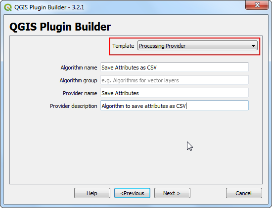

Styling a River Network with Expressions (QGIS3)¶
Contributed by: Steven Kim
In the previous tutorial Creating a Block World Map (QGIS3) we used expressions for scaling values and apply a color ramp. We build on those concepts and learn how to use expressions to visualize rivers in a popular style.
Note
This tutorial focuses on the use of expressions for styling. You can check out our another tutorial Creating a Colorized River Basin Map (QGIS3) that creates a different version of the map shown here using a tools-based workflow.
Overview of the task¶
We will use expressions to filter and style South American rivers - with line widths representing upland area and colors representing basin id from HydroRIVERS.

Get the data¶
The HydroRIVERS dataset provides seamless global coverage of consistently sized river reaches, supported by geometric information that allows for basic analysis of river network topology such as stream connectivity and distances. The data is a subset of the comprehensive HydroATLAS package from WWF. Let’s download the shapefile of rivers for South America.
Visit the HydroRIVERS homepage.

The page has links for global and regional extracts of HydroRIVERS in shapefile and geodatabase formats. Scroll down and click on the download link for the
South Americashapefile. You will see theHydroRIVERS_v10_sa_shp.zipfile downloaded which is used for this tutorial.

For convenience, you may directly download a copy of the above layer from below: HydroRIVERS_v10_sa_shp.zip
Data Source: [HYDROSHEDS]
Procedure¶
Locate the
HydroRIVERS_v10_sa_shp.zipfile in the QGIS Browser and expand it. Select theHydroRIVERS_v10_sa_shp/HydroRIVERS_v10_sa.shpfile and drag it to the canvas.

A new layer
HydroRIVERS_v10_sawill now be loaded in QGIS and you should see a map of rivers in South America. Click on Open Layer Styling Panel.

Switch from Single Symbol to Rule-based.

Double-click on the default rule to enter the Edit Rule dialog.

To filter using an expression, click the Filter ε. This will open the Expression Builder.

Select the Expression box on the left to input the expression as follows and click OK. This expression selects river features with an upland area equal to or greater than 100 square km.
"UPLAND_SKM" >= 100
The map now shows the filtered rivers with large upland areas. You can adjust this threshold based on the scale of your region.

Now that we have used an expression to filter features, let us use an expression to color each river segment based on the field
MAIN_RIV. Scroll-down to the Symbol options in the styling panel and select Simple Line to bring up styling options such as color, stroke width and more. Click on Data define override button for the Color and select Edit… on the menu.

This brings up the Expression Builder dialog for color. Enter the expression below. This expression combines the functions
ramp_color()andscale_linear()to select colors from the spectral color ramp using the range of MAIN_RIV id values. Click OK to exit the dialog.
ramp_color('Spectral',scale_linear("MAIN_RIV", minimum("MAIN_RIV"),maximum("MAIN_RIV"),0,1))
At the Edit Rule dialog, click on Data define override button for Stroke width and select Edit… on the menu. Enter the following expression. The expression scales line width based on the upland area of each river segment, with a minimum of 0.01 mm to a maximum of 0.1 mm for rivers with an upland area equal to or larger than 10,000 sqkm.
scale_linear("UPLAND_SKM",100,10000,0.01,0.1)
Click OK to exit the dialog. The river lines will now be rendered in different widths based on their upland area. The expression needs to be evaluated for each feature and thus the rendering may take some time.

Let’s change the background color to black to contrast with our color choices. Navigate to . Click on the down arrow and select black. Click OK.

You should now see the completed river network of South America.

If you want to give feedback or share your experience with this tutorial, please comment below. (requires GitHub account)